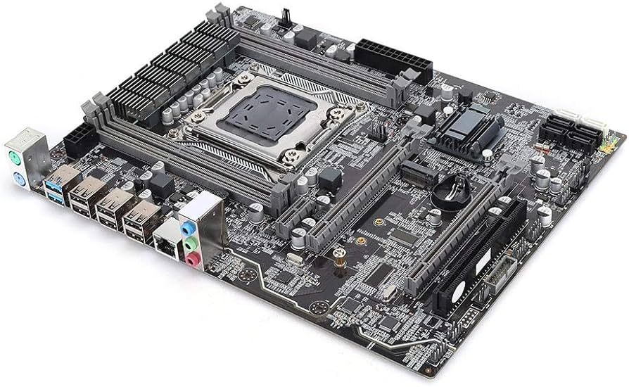

Servicio Técnico


Nuestros Servecios:

Reparación de móviles
Reparación móvil - Servicio Técnico profesional. Nuestro servecio de reparación de móviles, dispone de la capacidad y destreza para reparar todas las fallas que puede presentar el teléfono. Reparamos todos los modelos de móviles con respuestos de calidad y sujetos a garantiá.
reparación de ordenadores
Servicio técnico profesional especializado en reparación de ordenadores. No solo trabajamos para solucionar su problema, sino que también recibirá los mensages consejos para asegurarte que tu ordenador tenga una vida larga y útil. Reparamos las averías de ordenadores de cualquier marca y modelo
Montaje de ordenadores a Medida
Equipo técnico informático especialitzado en montaje personalizado de ordenadores a medida al contratar nuestro servecio de montaje de ordenadores a medida contrás con el consejo experto de profesionales con una dilatada experiencia que te recomendarán aquellos componentes más idóneos en función del uso que vayas a dar (juegos, diseños, ofimática, empresas ..) y de tu presupuesto.
Reparación Pantallas y Monitores
En pcsamsung disponemos de un servicio técnico para reparar pantalas y monitores.
Servecio técnico en reparación de pantallas y monitores,
Servecio técnico profesional especializado en la reparación de pantallas y monitores,
Aviso Importante:
No reparamos monitores que presentan roturas físicas de pantalla o daño visible exterior o interior
(sombras, manchas, rallas, pérdidas de color etc.)
Reparación Cosolas y Tabletas
Servicio de reparación de consolas y tabletas, Servicio Técnico profesional especializado en la reparación
de consolas y tabletas.
Actualmente resulta difícil encontrar un servicio técnico profesional de reparación de consolas y tabletas de confianza.
La tecnologiá rodea nuestra vida complemente todas nuestras actividades habituales.

Reparación Placas base y Reballing
Servicio de reparación de Placas base, servicio técnico especializado en la reaparación de placas base y Reballing. Una de las reparaciones más complicadas en cualquier dispositivo es reparación de las placa base. El primer paso es detectar el problema, y para ello necesitas de las herramientas adecuadas.
Mntenimiento informático
Mantenimiento informático para empresas y particulares.
Ofrecemos un sevicio técnico profesional de mantenimiento informático para empresas y particulares.
El mantenimiento informático consiste en una serie de acciones que garanticen el correcto funcionamiento de todos los equipos informáticos, tanto
a nivel de software como de hardware.
No reparamos monitores que presentan roturas físicas de pantalla o daño visible exterior o interior
(sombras, manchas, rallas, pérdidas de color etc.)
Desarrollo informático
Equipo de técnicos profesionales especialitzados en el desarrollo de paginas web, Dentro de nuestro servicio de desarrollo informático tenemos el Diseño Web y desrrollo Web de páginas web corporativas, catálogos online, portales, webs de venta online y tiendas virtuales con soluciones para cobrar con tarjetas.
Servicio informático a domicilios
Servicio técnico Express. Servicio de informático Express a domicilios en españa sin coste de desplazamiento cada día son más las personas que solicitan un servicio de informáticos a domicilios. La comodidad de poder resolver los problemass que puedan tener nuestros equipos sin tener que movernos.